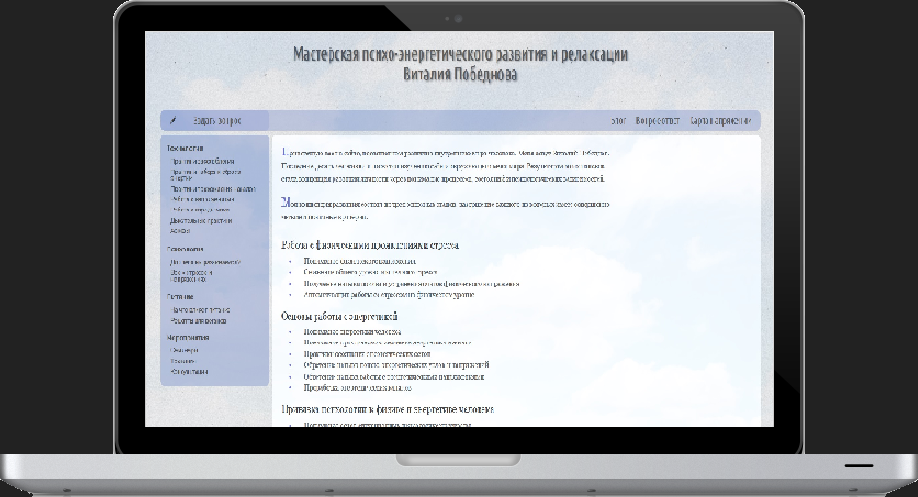
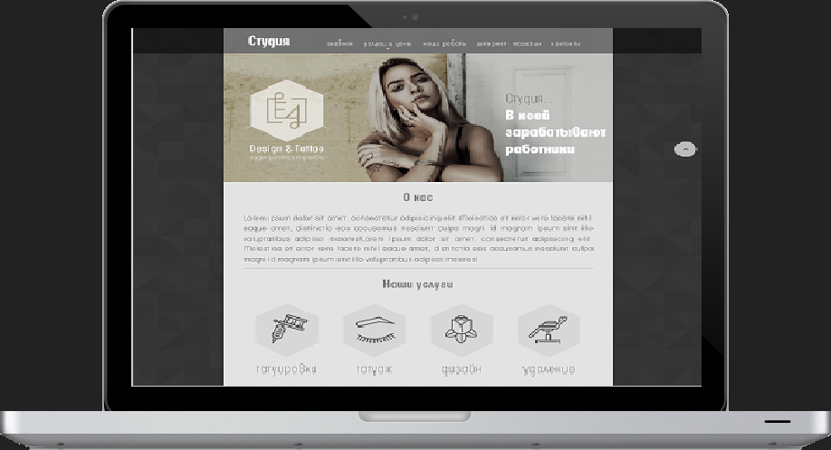

Примеры работ

Сайт расслабляющих практик
Сайт делал другу , просил переделать дизайн и сделать адаптивным. Дизайн придуман мной ... кажется я не дизайнер.

Сайт студии
Сайт студии, верстался по psd макету. Много нового открыл для себя в этом проекте, например работу с Google maps и api.

Сайт для собаководов
Практиковался в применении позеционирования с помощью flex-box. Сайт в процессе разработки дизайна.